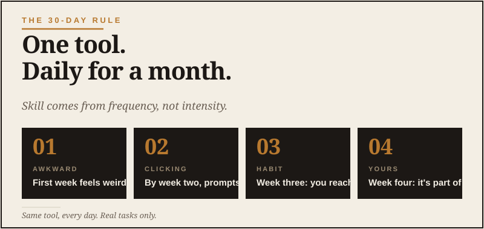

Cornerstone Essay
The asset isn't the tool. It's how fast you can learn the next one.
I want to make an argument that runs against a lot of the AI advice you'll read this year.
Most of it is about tools. Which AI to pick. Which prompts to memorize. Which subscription is worth the twenty bucks a month. I get it. I like tools. I have spent an irresponsible amount of time comparing gear that, if we’re being honest, probably did not need that much analysis. But the whole AI conversation is operating one level too low — at the level of what's hot right now.
Here's the thing nobody who's selling you a course wants to say out loud: none of these tools are going to be the tools you use in 2030.
ChatGPT will not be ChatGPT in five years. The version you'd open today will look like a dial-up modem by then. Claude will be a different product. Gemini might be three different products. Half the prompts that work this week will be obsolete by next year because the underlying models will have absorbed them. The interfaces will change. The pricing will change. The whole shape of what we even call "AI" will change.
The men who'll be most capable in 2030 are not the ones who memorized this year's prompts. They're the ones who got good at learning new tools quickly.
If you're a grown man trying to figure out where to invest the next decade of your attention, this matters. It changes the answer to "what should I learn?" in a fundamental way.
The thing that compounds.
Think about your own life. Think about every tool you've actually become competent with over the last twenty years.
Email. Google. Smartphones. Online banking. Whatever software runs your work life. Texting. Group chats. Maps. Probably some specific software for your industry — accounting tools, project management, scheduling, design, whatever. If you served, the systems shifted under your feet at least three or four times. If you ran a business, even more.
You learned all of these because you had to. None of them came naturally. Every one of them felt awkward for a week or two and then became automatic. I watched this happen in the Navy over and over again. A new system shows up, everybody grumbles, somebody says the old way was better, and then six months later we’re all using the new thing like it was issued at birth.
And here's the part most men don't notice about themselves: you got faster at it each time.
The first new tool you learned as an adult — whatever it was, somewhere in your twenties — probably took you a couple weeks. The fifth one took a few days. By the time you were learning your tenth or twentieth piece of software, you could become functional in an afternoon. That's not because the tools got simpler. It's because you got better at the act of learning new tools.
That's the meta-skill. And it's the only thing that's going to matter for the next twenty years.
Why the meta-skill is the asset.
The pace of new tools is not slowing down. It's accelerating. The AI thing that everyone is freaked out about right now is one wave of a much bigger pattern. There will be another wave. And another. And another.
Each wave is going to ask you the same question: are you the kind of person who picks up new tools quickly, or the kind of person who waits until the new tool feels mandatory and then learns it under stress?
The first kind of person spends their fifties and sixties getting more capable, not less. The second kind doesn't.
This isn't a generational thing. I know guys in their seventies who are learning AI right now and getting useful with it faster than guys in their thirties who are convinced they don't have time. The difference isn't age. It's the willingness to be a beginner, briefly, on purpose. That part is uncomfortable. Nobody likes going from competent guy to guy asking basic questions. But that’s where the reps start.
That's the meta-skill in one sentence. The willingness to be a beginner, briefly, on purpose, repeatedly, for the rest of your life.

What this changes about how you should learn AI right now.
If you accept that none of these specific tools will matter in five years, the question shifts.
It's not "should I learn ChatGPT or Claude?" The honest answer is yes — pick one, use it, get fluent. But the real question is: am I building the muscle of picking up new tools, or am I just memorizing the menu of this particular one?
The first kind of learning compounds. The second kind doesn't.
Memorizing prompts is an example of the second kind. You learn a "magic prompt" that produces some specific output, and when the AI changes — and it will — that prompt stops working. You're back at zero. Worse, you've trained yourself to think AI is a thing you operate with magic incantations, which is exactly the wrong mental model.
Building the meta-skill looks different. It looks like:
- Treating every new tool as the same problem. What does it do? Where does it shine? Where does it fail? How do I talk to it like a person? What's the unfair advantage of using it well? You bring those four questions to AI today, the next thing five years from now, and the thing after that.
- Learning by doing real work, not tutorials. Tutorials teach you the menu. Real work teaches you the principles. The men who get useful with AI fastest are the ones who reach for it on actual tasks before they feel ready.
- Paying attention to the patterns under the tool. The specific words you type into ChatGPT today don't matter. The pattern — describe the situation, name the goal, ask for the limits — does. That pattern transfers.
- Writing down what works for you, not what works in general. The way you use AI well will be different from the way I use it well, because we have different lives. Your private playbook of what worked is the actual asset. The generic advice is just a starting point.
What stays. What goes.
If you zoom out and think about what's actually going to be valuable in the next twenty years — what's the asset, not the tool — here's what I think the answer is:
The capability to think clearly stays. The frameworks for making good decisions, weighing risk, reading people, telling truth from spin — all of that is more valuable now, not less. AI doesn't replace thinking. It rewards the people who can think.
The capability to learn new tools quickly stays. This is the meta-skill. It compounds. Every wave makes the next wave easier if you're paying attention.
The capability to write and speak clearly stays. AI can generate text, but the men who direct it well are the ones who already know what good writing looks like. The premium on clarity is going up, not down.
The capability to ask sharp questions stays. This is the actual prompt skill, but it's older than AI. The men who ask better questions get better answers from AI, from doctors, from contractors, from their own kids. AI just gave a new use case to a skill that was always valuable.
The capability to read people and situations stays. AI cannot do this for you. It cannot tell you whether your partner is upset about what they said or what they didn't say. It cannot tell you whether the person across the negotiating table is bluffing. It cannot tell you whether your son is fine or struggling. That whole layer of competence is yours alone, and it's never been more valuable than in a world where the easy stuff is being automated.
What goes? Specific tool fluency in any one product. Memorizing the menu. The thing you spent six months mastering in 2025 will be obsolete by 2028. That's fine. You only needed it to do real work in the meantime, and to build the meta-skill while you did.
The trap that catches most men.
Here's the trap. Most men our age, when they finally engage with AI, treat it like a one-time skill acquisition. They think: I'll buckle down for a month, learn this AI thing, and then I'll be set.
That's the same mental model as learning to drive. Learn it once, you've got it for life. The AI is the car. You learned the car.
That's wrong. AI isn't a car. It's a category. There's going to be a new model every six months, a new category every two or three years, and the men who set themselves up to learn the current tool and then stop are going to be exactly as stuck in three years as the guys who never learned the current tool at all.
The mental model that works is closer to fitness — or trail driving, or filming, or any other skill that punishes you the moment you assume you’ve got it mastered. You don't get in shape once. You stay in shape by doing the work weekly, forever. Some weeks are heavier than others. Some weeks you're recovering. But the practice never stops, because the body never stops needing it.
Tools are the same. The practice of staying current — of being the kind of man who tries new tools, gets useful with them, and then is ready for the next one — never stops, because the world doesn't stop changing.
The asset isn't the tool. It's the practice of staying current.
What this means for the next ten years.
If you're forty-five, fifty, fifty-five right now, you've got somewhere between fifteen and thirty productive years ahead of you. That's a long time. Long enough that the tools you learn this year will be replaced two or three times before you slow down.
The men who'll be most capable, most valuable, most useful at the end of that stretch are the ones who treat the meta-skill — staying current, learning new things on purpose — as a permanent habit. Not a one-time project. A way of being in the world.
That's the bet I'm making with my own life. I don't actually care that much about ChatGPT. I care about being the kind of guy who's still capable in 2035, when ChatGPT is a footnote and the real tools look completely different. I don’t want to be the guy at the end of the table complaining that everything changed. Things change. That’s the nature of the beast.
The way you become the other kind of guy is by doing this — engaging with the current weird tool, getting useful with it, paying attention to the pattern, and being ready to do it again with the next one.
Use AI today. Use whatever's next, when it's next. Build the muscle that does both.
The tools come and go. The skills compound. That's the whole game.